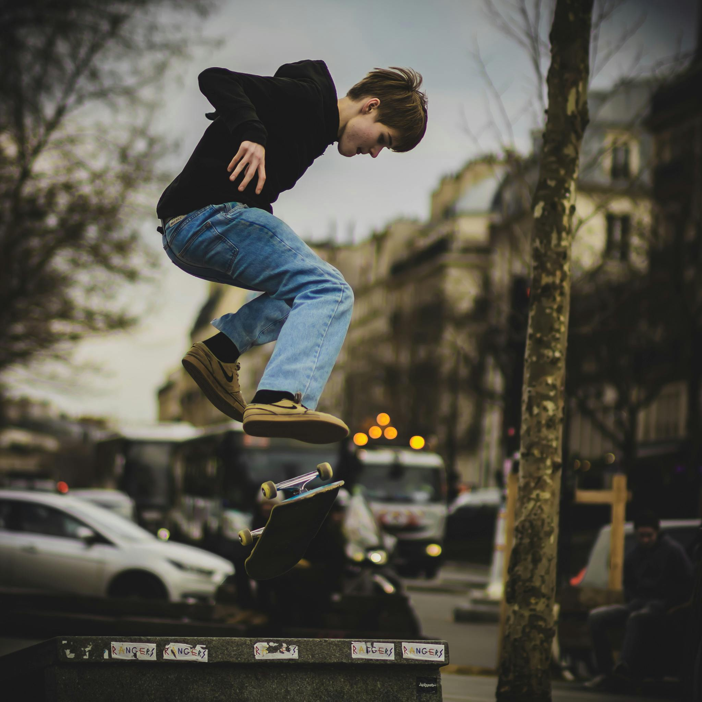
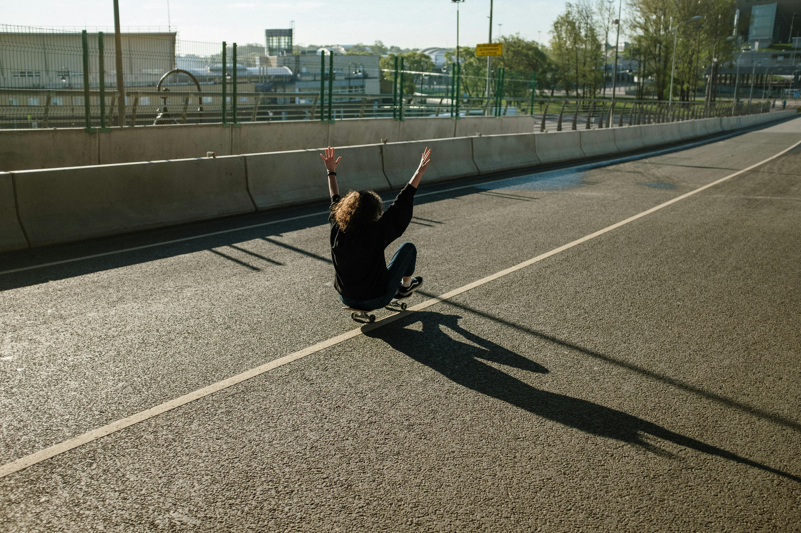

There’s a moment in every session when the world begins to dissolve. The city’s noise fades into a low hum, the edges of the sidewalk blur, and time stretches into something elastic. You’re no longer calculating, hesitating, or performing—you’re simply moving. The board responds before you even think. Your body knows what to do, and your mind finally gets quiet. This is the flow state. It’s elusive, sacred, and unmistakable. You don’t chase it—it finds you, somewhere between repetition and release
In that state, the board becomes more than wood and grip—it becomes a brushstroke. The street transforms into rhythm. Every push is a beat, every flick a syllable, every carve a phrase in a language only skaters speak. You’re not skating the spot—you’re conversing with it. The ledge doesn’t challenge you; it invites you. The curb doesn’t resist; it responds. Flow is the invisible thread that ties together every trick, every line, every slam that somehow felt beautiful.
“ Every push is a beat, every flick a syllable, every carve a phrase in a language only skaters speak.”
It’s not about landing the trick. It’s about the trance. The way your body loops through motion like muscle memory turned ritual. The way your eyes scan the terrain without thinking, already knowing where your feet will be. Flow is the feeling of being so present that even failure feels like part of the choreography. It’s skating stripped of ego, stripped of outcome—just pure connection.
There’s a kind of memory that lives in your legs. It’s not stored in words or thoughts—it’s etched into muscle, into repetition, into the way your body leans before your mind catches up. Flow taps into that memory. It’s the reason you can roll up to a spot and know, without thinking, exactly how fast to go, where to pop, how to land. It’s not calculation—it’s recall. A physical archive built from every slam, every sketchy make, every perfect flick. In flow, you’re not just skating—you’re remembering.
Sometimes flow feels like flight. Not in the sense of leaving the ground, but in the way gravity loosens its grip. You’re still bound to the pavement, but the friction fades. The push feels lighter, the carve feels deeper, and the board hums beneath you like it’s alive. You’re not fighting the terrain—you’re gliding through it. Even the rough spots feel smoother. Even the cracks feel intentional. It’s as if the street is letting you pass, just this once, because you’ve earned it.
Flow can be fragile. One distraction, one break in rhythm, and it’s gone. A car honks, a foot slips, a thought intrudes—and the trance breaks. But that’s part of its magic. It’s fleeting, rare, and impossible to fake. You can’t force flow. You can only prepare for it—by showing up, by pushing through the warm-up, by listening to the street until it speaks back. And when it does, when everything aligns, it feels like skating is the only thing that ever made sense.
Some skaters find it in the silence of a solo cruise. Others tap into it mid-session, surrounded by friends and chaos. It can arrive on a hill, in a plaza, or in the middle of a crusty alleyway. It doesn’t care about the spot—it cares about the surrender. The moment you stop trying to control and start letting it happen. That’s when the street opens up. That’s when the board speaks back. That’s when skating becomes something more than movement. It becomes meditation. It becomes memory. It becomes myth.
